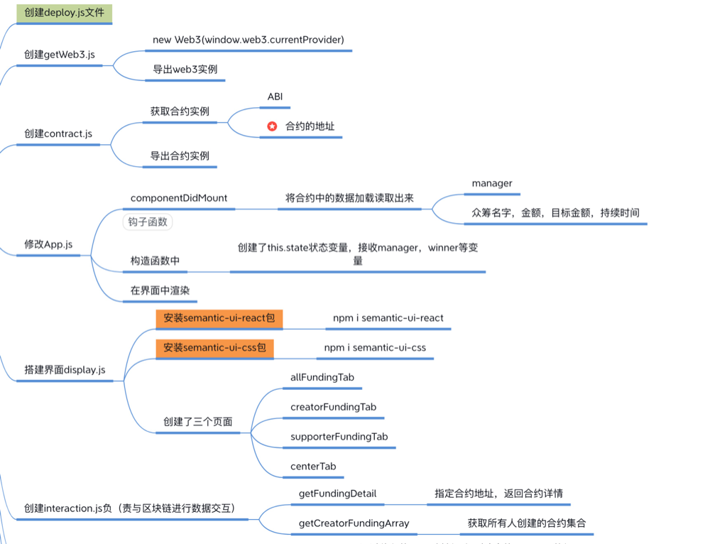

The Dapp development case is to develop a public-benefit crowdfunding project based on Simplechain. The following is a review of the development process of the entire crowdfunding project.
Write a contract and test it in remix
Download and Install remix , and try to write the contract method. And conduct tests.
Create an empty project for React
The empty project of The React creation mainly contains two commands. First, install create-react-app This command:
install create-react-app
It installs the directory on which your node depends and creates the project:
./create-react-app
After creating a project, you can use the following command to initialize the project:
npm run start
Create a comple.js file
Create the compile.js file and install the solc compiler. The command is as follows:
npm install solc
After solc is installed, you can call solc.com pile(sourceCode,1) to compile the source code. After compilation, export the compiled bytecode (bytecode),interface.
Create a js file
To build an interface, call web3, and interact with the blockchain, you need to use the js method. Therefore, you need to create multiple js files in this step. The following figure shows the specific js file to be created:

Initiate contract function
The function of initiating a contract mainly has two specific logics to implement. One is to write specific methods in interaction, and the other is to complete the call in CreateFundingTab.
Initiate and participate in crowdfunding
There are three main implementation functions of initiating and participating in crowdfunding. One is as follows:
- Pass a callback function onItemClick to CardList in the main interface to return the details of the contract clicked by the user.
- Pass to MyCard in CardList
- In MyCard, when onClick is triggered, the onItemClick is called and the corresponding detail is returned.
The address of the contract and the supported amount can be obtained through the above three-step method.
The second is to write specific methods in interaction, and the last is to complete the call in CreatorFundingTab. The figure is as follows: